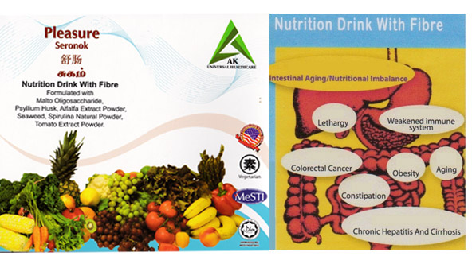
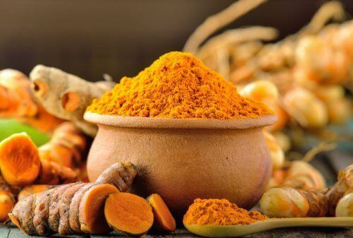
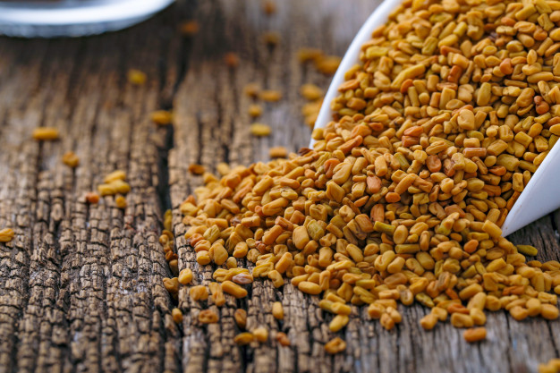

Organic herbs packed for personal consumption, upon request by AKUC members only.
AK Universal Healthcare has appeared at an opportune moment when most of us have turned away from life’s natural state and when illness has taken a toll on our body, mind and soul. It is now an opportunity for us to revert to naturopathy for more effective health management.
AK Universal Healthcare guarantees a peaceful mind via effective health measures by way of natural grass root health remedies. Every member of AK Universal Healthcare will benefit from the range of natural remedy products at affordable rates and enjoy free consultation by Ayurvedic and other health care specialist for his/her personal health management.
Pleasure consists of Psyllium herb (Plantago ovate) that is a shrub- like soluble fiber with vegetable and fruit extract used primarily as a gentle bulk forming laxative. When fibre comes in contact with water, it swells and forms a gelatin-like mass that helps transport waste through the intestinal tract.
Therefore, maintaining a healthy intestinal tract is the key to general wellness. Unless you regularly eat whole fruits and vegetables, nuts, and seeds, you may be missing out on the healthiest forms of fiber to help boost your health. A high - fibre diet has many benefits which include:
Curcumin is the principal curcuminoid of turmeric of the popular Indian spice turmeric, which is a member of the ginger family(Zingiberaceae). The curcuminoids are natural and responsible for the yellow color of turmeric.
Curcumin is the main active ingredient in ABTN. It has powerful anti-inflammatory effects, is a very strong antioxidant and has antibacterial and antiviral properties. Some of the health benefits of ABTN include:
Although Fenugreek is primarily used as a condiment, it is s traditional herb that has many uses in promoting and balancing health. Most of the health benefits of fenugreek are due to the presence of saponins and fiber that it contains.
Its seeds contain a gumming substance called mucilage and when mixed with water, mucilage expands and becomes a gelatinous salve for irritated tissues. Some of the health benefit includes:
NOTE:- Pregnant and lactating women should consult a doctor before taking fenugreek